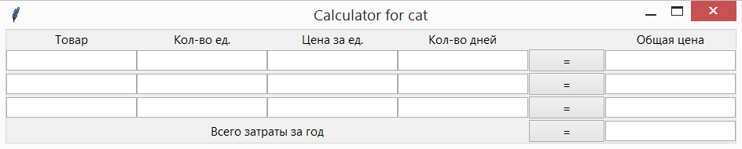
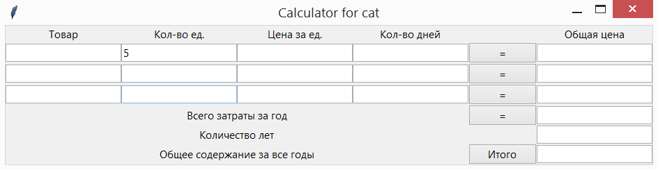
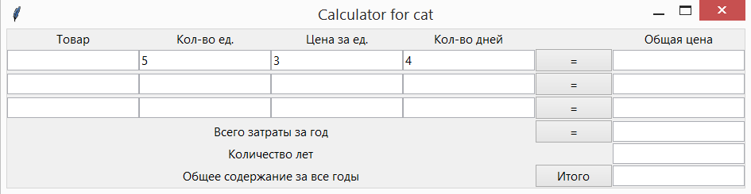
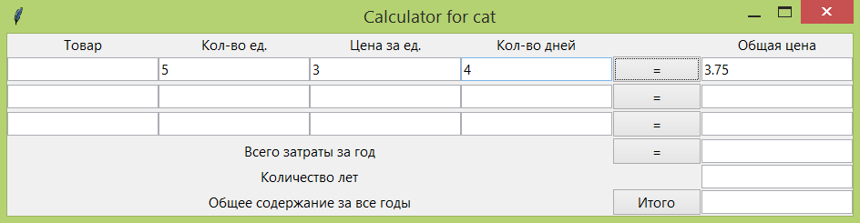
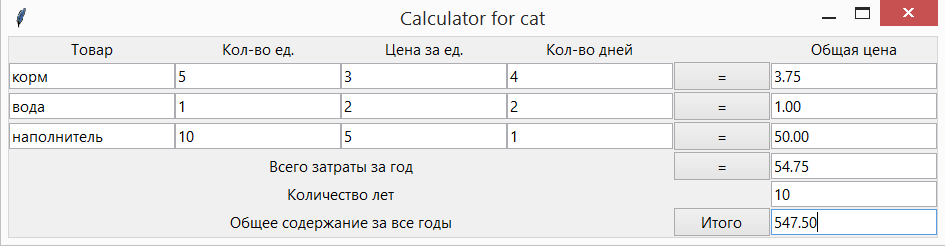

13. Tkinter. Содержание котенка (часть 2)¶
На предыдущем уроке мы создавали интерфейс - своего рода «фронтэнд». Далее мы запрограммируем поведение программы при нажатии на кнопки: обработку событий кнопок - эту «теневую» сторону программы скрытую от глаз пользователя называют «бэкэнд».
13.1. Планирование проекта¶
Перед тем чтобы что-то начинать делать важно расположить задачу на шаги, и чем подробней и мельче шаг будет получен, тем легче, проще и быстрей их будет реализовать:
- требуется обработать событие нажатие кнопки;
- обработка события включает в себя команду вызова события и функцию которая вызывается;
- нужно понимать, что каждое окошко в каждой строчке служит для ввода данных;
- вводимые данные необходимо считать (взять из поля) и хранить их;
- необходимо создать переменные, в которых будут храниться вводимые данные, для каждого поля отдельно;
- обработка значений переменных;
- вывод результатов в соответствующие поля.
13.2. Обработка нажатия кнопки¶
При нажатии на кнопку программы в программе происходит вызов события. Имя вызываемого события которое будет являться именем вызываемой функции выбирается произвольно, но с учетом правил именования переменных в языках программирования. Кроме этого имена функций часто начинаются со слов:
- «set» - если функция получает и записывает данные в переменную;
- «get» - если функция выводит данные.
Код функции обязательно необходимо размещать перед тем как его будут вызывать, т.е. если функция вызывается в строке 15, то написана вызываемая функция должна быть выше, например в строке 10. Для понятности кода порядок написания программы бывает следующий:
- импорт библиотек
- объявление всех глобальных переменных
- создание и описание всех функций
- основное тело программы
- в сложных проектах: последняя строка - это строка запуска программы.
Функция будет получать данные полей одной строки, поэтому мы назовем функцию: set_first. Добавьте код функции, в соответствующее место кода программы:
def set_first()
print("Called the first function!")
Результат выполнения, кода будет прежним: окно программы:
при этом при нажатии на любую из кнопок ничего не происходит, потому что мы не вписали код обработчика события: нажмите на кнопку. Команда обработчика событий: command=set_first. Т.е. необходимо изменить строку создания кнопки таким образом:
button_1 = Button(text="=", command=set_first).grid(column=4, row=1)
Запустив код программы, запуститься то же окно, но при нажатии на кнопку в первой строке, в консоли будет выводиться сообщение:
Called the first function!
Теперь создайте функцию и обработчик события для второй кнопки. Измените во второй функции надпись выводимую в консоль на «Called the second event». Проверьте правильность работу второй кнопки. Если все работает верно и понятно. Добавьте обработчики событий для всех оставшихся кнопок.
13.3. Хранение, ввод и вывод данных окна¶
Для сохранения данных заданных в одно из полей нужно сначала создать переменную в которой их хранить. Создадим переменную для второго поля первой строки, дав ей соответствующее название. И присвоим значение переменной равной 5:
num12 = StringVar()
num12.set(5)
Для того чтобы связать поле ввода данных с этой переменной внесем изменения в код в строке:
entry_12 = Entry(textvariable=num12).grid(column=1, row=1)
В результате выполнения во втором поле первой строки будет выведена цифра «5»:
Создайте переменный для третьего и четвертого полей первой строки и присвойте им значения 3 и 4. Визуализация окна должна получиться следующей:
Считывание данных из полей, будет происходить при нажатии на кнопку. Для получения данных из поля нужно написать следующую команду: num12.get() Изменим код вызываемой функции:
def set_first()
print("Called the first function!")
print(num12.get())
В результате запуска, приложения при нажатии на кнопку в консоли будет выведены надпись и число:
Called the first function!
5
Выведите данные в консоль третьего и четвертого текстового поля доработав код соответствующим образом.
13.4. Обработка значений переменных¶
Последнее поле в строке программы будет выводить результат вычисления предыдущих полей. Для начала создадим переменную в которой будем хранить данные для последнего поля первой строки и присвоим значение равное «0»:
total_first = StringVar()
total_first.set(0)
И привяжем переменную к полю:
entry_15 = Entry(textvariable=total_first).grid(column=5, row=1)
Для получения значения общей цены затрат надень рассчитывается по формуле:
количество единиц * цена за единицу товара / количество дней = общая цена в день
Все преобразования и выведения результата вносим в функцию обработки события нажатия на кнопку первой строки для последнего первой строки:
def set_first()
print("Called the first function!")
print(num12.get())
global total_first
total_first.set(float(num12.get())*float(num13.get())/float(num14.get()))
Команда global необходима, чтобы функция увидела созданную вначале программы переменную total_first. Значения из текстовых полей, передаются в виде строки поэтому для вычисления с ними данные необходимо преобразовать в число. Функция float(…) преобразует строку в число с плавающей запятой.
Теперь при запуске программы и нажатии кнопки в последнем поле должно появиться вычисленное значение:
По аналогии доделайте три строки программы.
Всего затраты за год высчитываются по формуле:
(общая цена первой строки + общая цена второй строки + общая цена третьей строки) * 365 = всего за год
И вычисляются при нажатии на соответствующую кнопку равно.
Количество лет - это поле не вычисляемое, а поле ввода длительность жизни котенка.;) И при нажатии кнопки «Итого» выводиться результат всех затрат, вычисляем по формуле:
всего затраты за год * количество лет = общее содержание за все годы
Результат программы может быть следующим:
